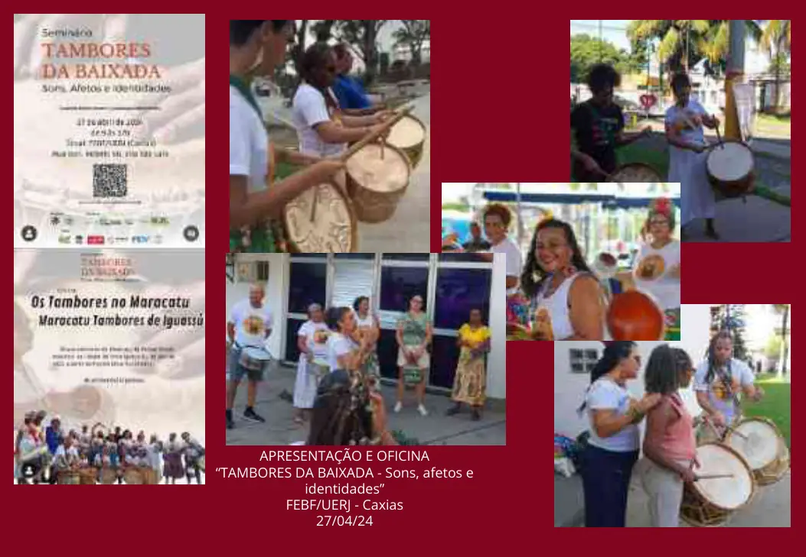
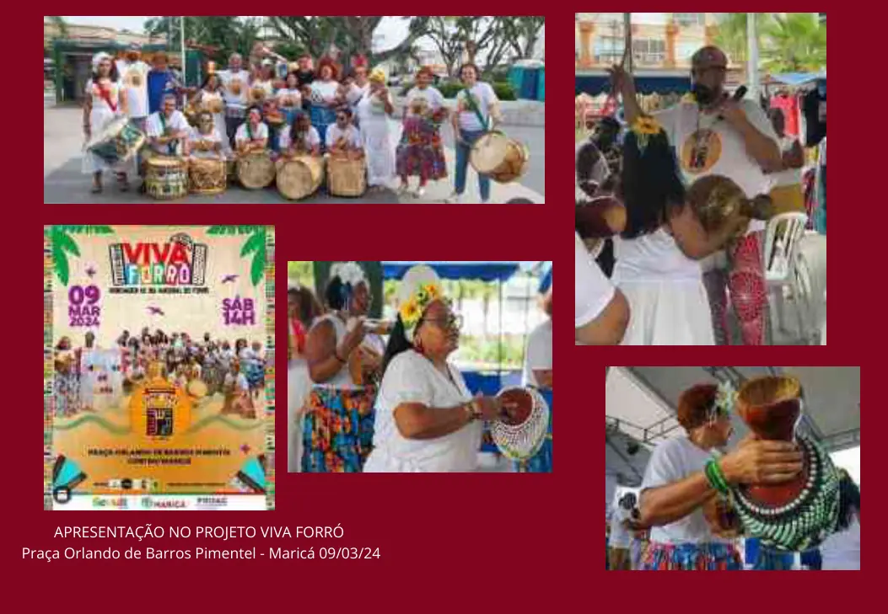
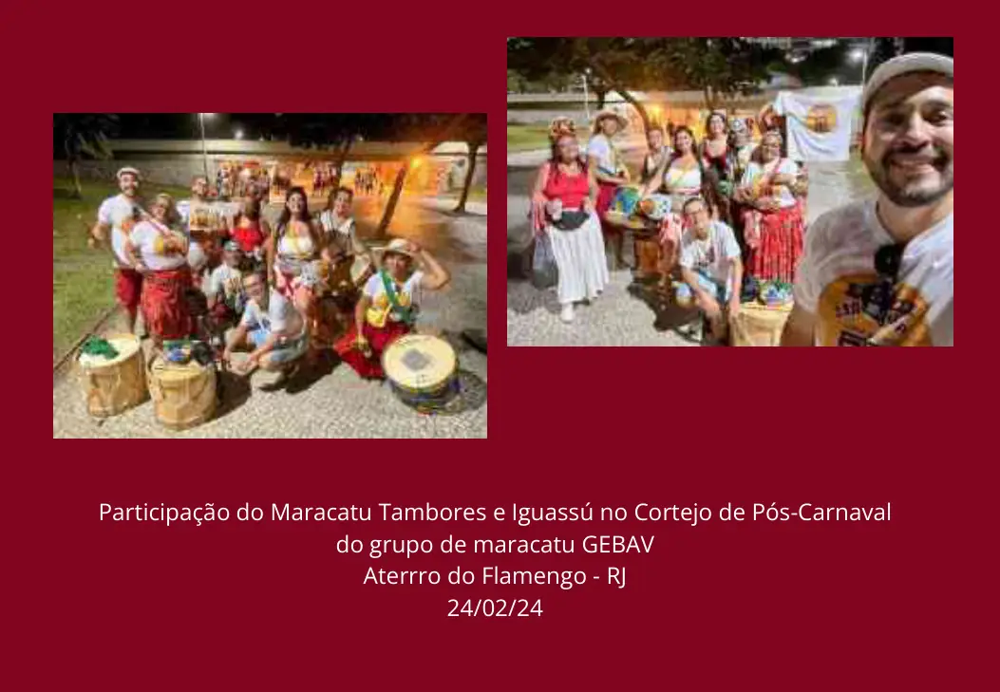
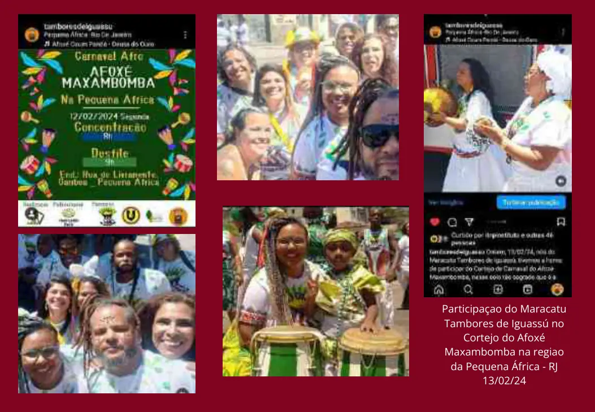

Apresentação e oficina — FEBF/UERJ
O portfólio registra “Tambores da Baixada — Sons, afetos e identidades”, na FEBF/UERJ, em Caxias, em 27/04/2024.
Fonte página 67O portfólio registra apresentação e oficina na FEBF/UERJ em Duque de Caxias, apresentação no Projeto Viva Forró em Maricá e participação em cortejos no Aterro do Flamengo e na Pequena África, no Rio de Janeiro.
Conteúdo organizado sem transformar propostas futuras em realizações passadas. Cada afirmação principal está vinculada às páginas do portfólio.
O portfólio registra “Tambores da Baixada — Sons, afetos e identidades”, na FEBF/UERJ, em Caxias, em 27/04/2024.
Fonte página 67Há registro de apresentação na Praça Orlando de Barros Pimentel, em Maricá, em 09/03/2024.
Fonte página 68O acervo registra participação no Cortejo de Pós-Carnaval do grupo de maracatu GEBAV, no Aterro do Flamengo, em 24/02/2024.
Fonte página 69O portfólio registra participação no cortejo do Afoxé Maxambomba na região da Pequena África, no Rio de Janeiro, em 13/02/2024.
Fonte página 71As imagens abaixo são reproduções das páginas-fonte usadas para esta ficha de comprovação.




Esta ficha foi construída a partir do Portfólio LUBESNI anexado ao acervo institucional. Para uso em editais, recomenda-se enviar o PDF original junto com o endereço desta página e, quando houver, a fonte pública externa indicada.